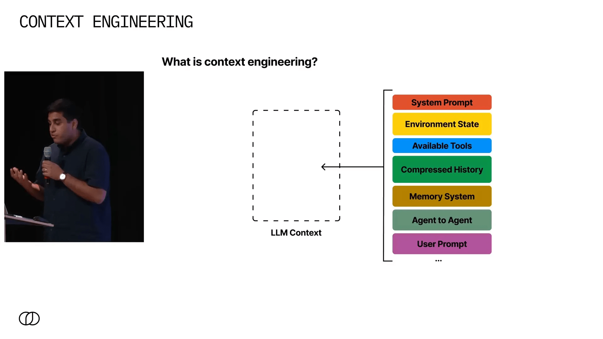
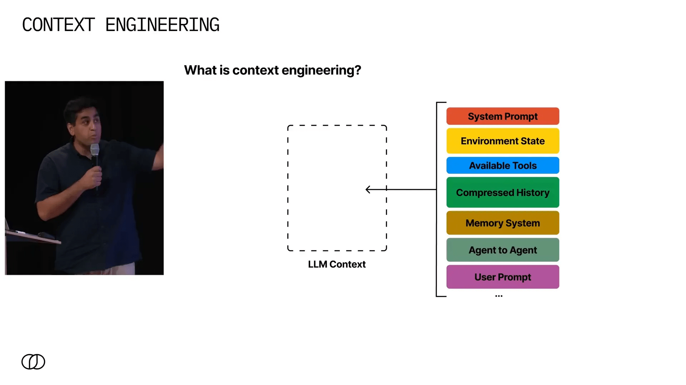
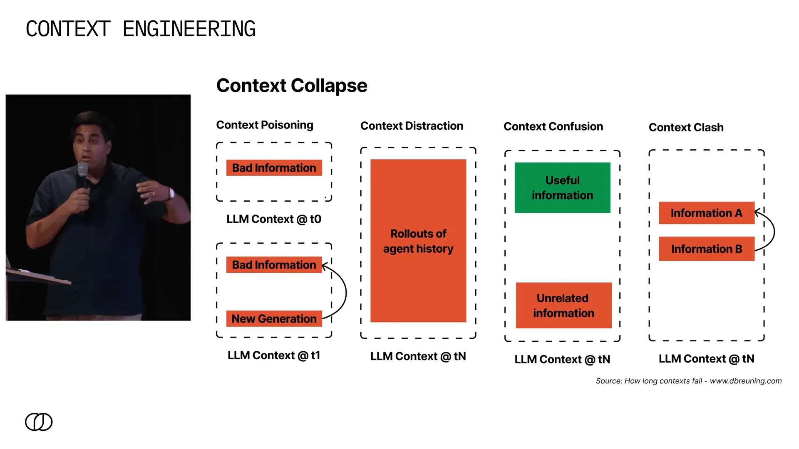
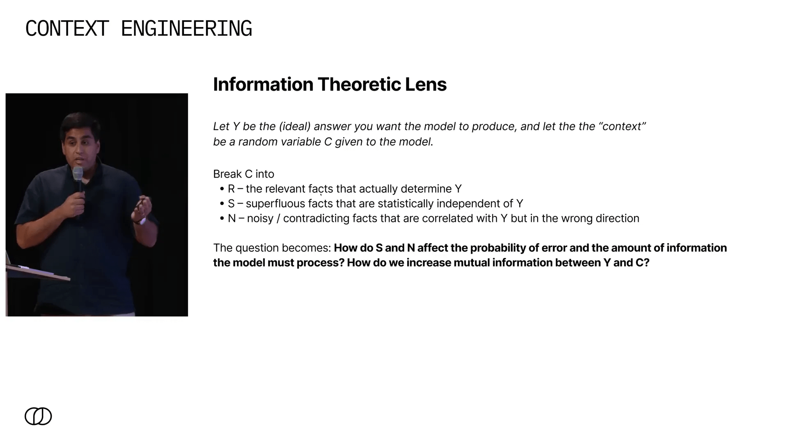
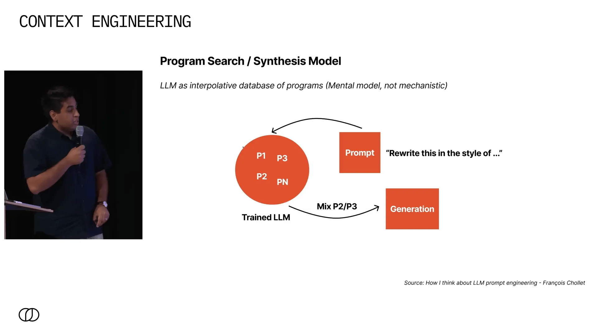
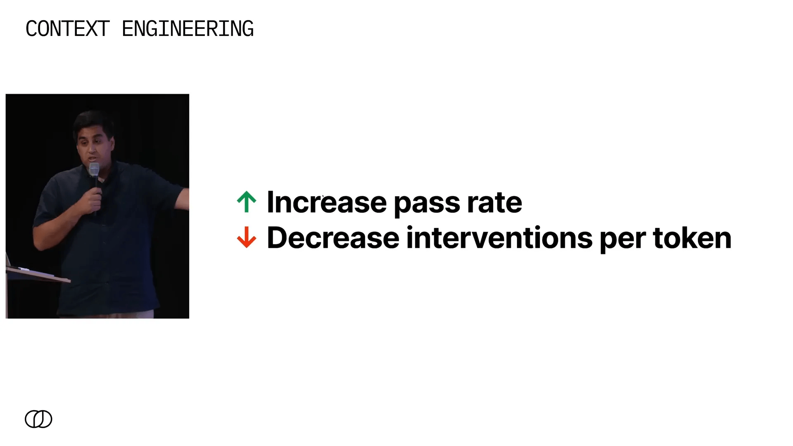
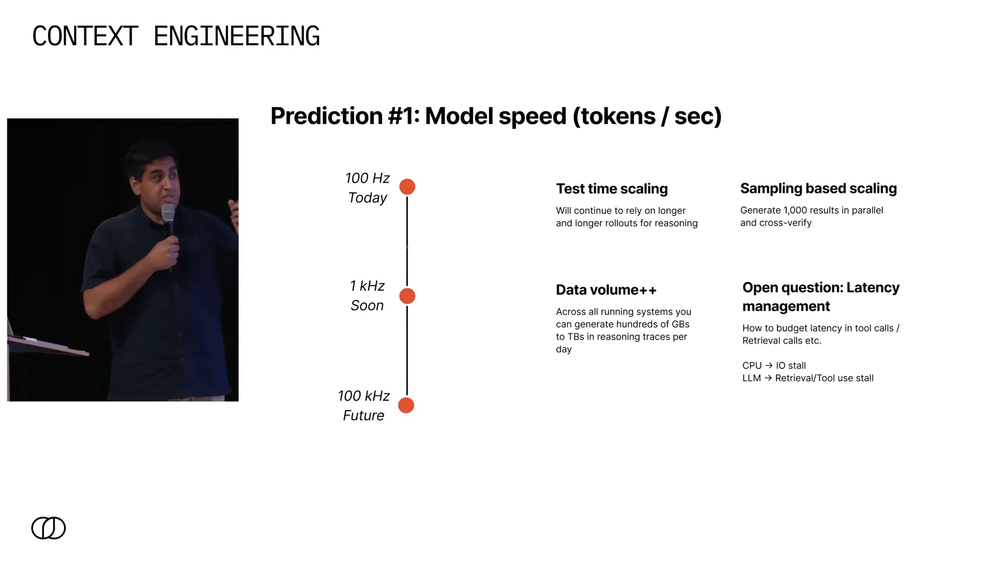
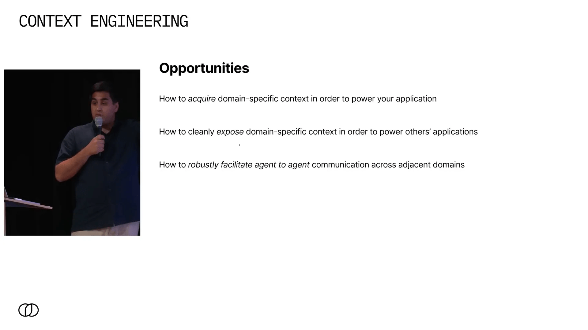
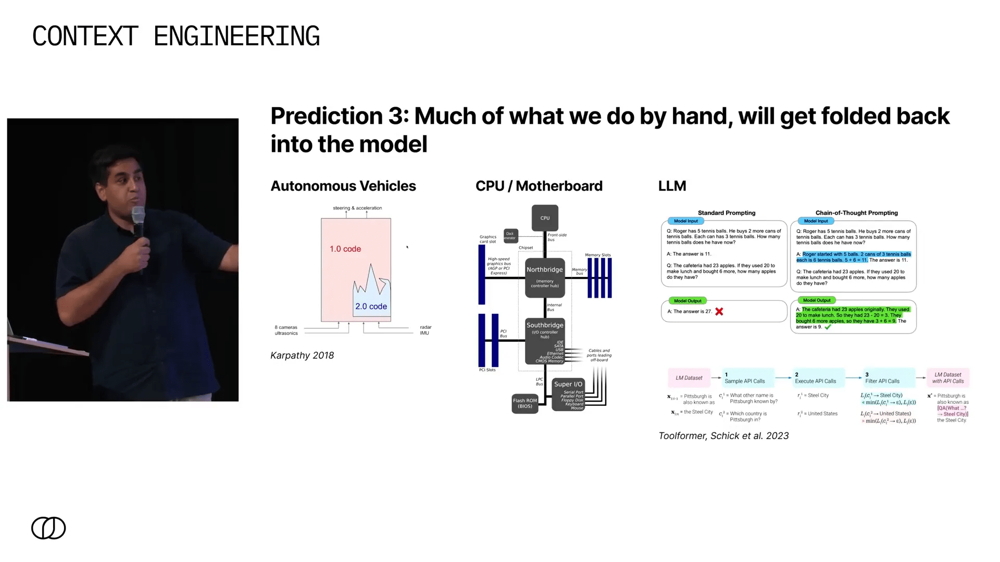
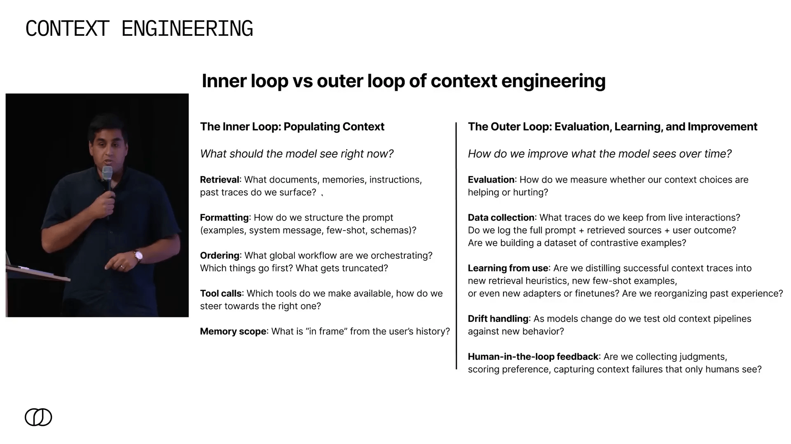

Quando comecei a pensar sobre a engenharia de contexto, um termo que inventamos recentemente, percebi que o que estamos construindo aqui é algo verdadeiramente revolucionário. Mais do que uma simples técnica ou conjunto de truques, a Engenharia de Contexto é um campo emergente que busca transformar a maneira como entregamos contexto para modelos de linguagem, garantindo respostas confiáveis e de alta qualidade. Nesta jornada, quero compartilhar minhas reflexões, previsões e modelos mentais que me ajudam a navegar nesse universo em rápida evolução.
Este artigo é uma imersão profunda no que significa realmente fazer engenharia de contexto, por que ela importa, os desafios que enfrentamos e para onde acredito que estamos caminhando. Vamos explorar desde as falhas comuns de contexto até analogias poderosas tiradas da engenharia estrutural, CPUs e veículos autônomos, para entender como podemos construir sistemas mais robustos e escaláveis.

Table of Contents
- 🔍 O Que é Engenharia de Contexto?
- ⚠️ Por Que Nos Importamos com a Engenharia de Contexto?
- 🧠 Uma Lente Teórica para Entender o Contexto
- 🛠️ Engenharia de Contexto: De Artesanato a Engenharia Real
- 🎯 O Objetivo Final: Aumentar a Taxa de Sucesso dos Modelos
- 🚀 Previsões para o Futuro da Engenharia de Contexto
- 🔄 A Importância do Loop Externo na Engenharia de Contexto
- ❓ Perguntas Frequentes sobre Engenharia de Contexto
- 🔚 Conclusão: Investindo no Futuro da Engenharia de Contexto
🔍 O Que é Engenharia de Contexto?
Antes de mergulharmos no porquê e no como, precisamos alinhar o conceito básico: o que é exatamente a Engenharia de Contexto? Em termos simples, é o ato de reunir todas as informações que um modelo de linguagem pode precisar e entregá-las no contexto de forma rápida e otimizada para que a próxima geração do seu agente ou modelo produza uma resposta confiável.
O desafio aqui não é pequeno. Pense em quantas fontes de dados podem existir em um sistema:
- Prompt do sistema: as instruções básicas que guiam o comportamento do modelo.
- Estado do ambiente: o contexto operacional onde o agente atua.
- Ferramentas disponíveis: APIs, bancos de dados, ou outros agentes com especializações específicas.
- Histórico: toda a interação passada do agente com o ambiente e o usuário.
- Sistemas de memória: mecanismos de recuperação, consultas estruturadas como SQL, e armazenamento de longo prazo.
- Engajamento do usuário: o prompt ou comando atual do usuário.
Combinar tudo isso em um contexto coerente, que o modelo possa usar para gerar uma saída correta e confiável, é o que define a engenharia de contexto. E é um problema complexo porque o volume e a diversidade de dados podem ser enormes e variáveis.

⚠️ Por Que Nos Importamos com a Engenharia de Contexto?
Se você já trabalhou com modelos de linguagem, sabe que o contexto é fundamental para a qualidade da saída. Mas por que investir tanto esforço nisso? Afinal, muitos falam sobre a escalabilidade dos contextos para milhões ou até bilhões de tokens. No entanto, se fizermos as contas, mesmo dez milhões de tokens correspondem a cerca de 40 megabytes de dados — um volume surpreendentemente pequeno no mundo dos dados.
Além disso, aumentar o volume de contexto não elimina os problemas; pelo contrário, cria novos tipos de falhas. Um artigo que gosto muito, de um autor conhecido como dbruining.com, propõe uma taxonomia clara dessas falhas:
- Context Poisoning (Envenenamento do Contexto): ocorre quando o modelo gera informações incorretas no início de sua geração e, posteriormente, essas informações ruins contaminam todo o processo, levando a respostas erradas.
- Context Distraction (Distração do Contexto): à medida que o agente acumula mais e mais informações, o excesso de dados pode confundir o modelo, dificultando a extração das informações relevantes.
- Context Confusion (Confusão do Contexto): quando sistemas de recuperação falham ao trazer dados relevantes, informações irrelevantes ou incorretas podem ser adicionadas ao contexto, confundindo ainda mais o modelo.
- Context Clash (Conflito de Contexto): surge quando diferentes fontes de informação fornecem dados conflitantes e o modelo precisa decidir como reconciliar essas diferenças.
Esses problemas são familiares para quem trabalha com modelos de linguagem, mas ter uma taxonomia clara ajuda a diagnosticá-los e pensar em soluções estruturadas.

🧠 Uma Lente Teórica para Entender o Contexto
Para mim, uma das formas mais úteis de pensar sobre a engenharia de contexto é através da teoria da informação. Imagine que você quer que seu modelo produza uma saída y. O contexto que você fornece, c, pode ser dividido em três partes:
- Fatos relevantes (r): informações que realmente influenciam a saída desejada.
- Fatos aleatórios (s): dados que não têm relação com a saída, estatisticamente independentes.
- Ruído e contradições (n): informações que parecem relevantes, mas que são ruidosas ou contraditórias.
O modelo precisa filtrar o ruído e focar nos fatos relevantes para minimizar erros e processar o menor volume possível de dados supérfluos. Isso faz da engenharia de contexto o processo de reduzir a carga informacional desnecessária que o modelo precisa processar para ser mais eficiente e preciso.
Quando você entende isso, começa a fazer perguntas mais inteligentes, como:
- Como aumentar a informação mútua entre o contexto e a saída desejada?
- Como organizar o contexto para que o modelo possa executar seu “programa” com maior eficácia?

🛠️ Engenharia de Contexto: De Artesanato a Engenharia Real
Para que a engenharia de contexto seja considerada uma verdadeira engenharia, precisamos de modelos robustos que nos permitam prever o desempenho do sistema antes de implementá-lo. Até agora, sem esses modelos, estamos apenas “hackeando” e testando empiricamente, sem uma base científica sólida.
Gostaria de compartilhar alguns modelos mentais que uso para pensar sobre isso:
1. Modelos como bancos de dados interpretativos de programas (Francois Chollet)
Imagine que um modelo de linguagem é uma enorme biblioteca de “programas” que ele aprendeu durante o treinamento. Por exemplo, quando você pede para reescrever um texto no estilo de Shakespeare, o modelo acessa um programa específico que sabe como fazer essa transformação.
Embora essa seja uma simplificação e não uma descrição exata do funcionamento interno, é uma metáfora poderosa para entender como o contexto pode “ativar” diferentes programas dentro do modelo.
2. Memória como recriação de estados mentais (Marvin Minsky)
“A função da memória é recriar um estado de mente; cada memória deve conter informações que permitam reassemblar os mecanismos que estavam ativos quando foi formada, para recriar o evento mental memorável.”
Podemos pensar no contexto como uma forma de “snap” que coloca o modelo em um estado específico, ativando os mecanismos necessários para gerar uma resposta confiável.
3. Mesa-otimizadores (Google)
Outro modelo sugere que os modelos de linguagem aprendem a executar otimizações internas durante o processo de inferência, chamados de mesa-otimizadores. Ou seja, o modelo não apenas gera texto, mas também realiza otimizações internas para melhorar suas respostas.

🎯 O Objetivo Final: Aumentar a Taxa de Sucesso dos Modelos
Independentemente da técnica usada, o objetivo da Engenharia de Contexto é aumentar a taxa de sucesso do modelo em sua tarefa específica. Para sistemas agentes, isso significa reduzir a necessidade de intervenção humana — ou, como gosto de dizer, diminuir as “intervenções por token”.
Essa métrica é semelhante ao que a indústria de veículos autônomos usa para medir seu sucesso (intervenções por milha) e é um parâmetro fundamental para avaliar a robustez de agentes autônomos baseados em linguagem.
Porém, mesmo entre os laboratórios mais respeitados, não há consenso sobre as melhores técnicas. Por exemplo, dois papers publicados em dias consecutivos por Anthropic e Cognition apresentam visões opostas sobre sistemas multiagentes — um defendendo e outro contra. Isso mostra que ainda estamos explorando o terreno.

🚀 Previsões para o Futuro da Engenharia de Contexto
Com base na minha experiência e nas tendências atuais, compartilho três grandes previsões que acredito que vão moldar o futuro da engenharia de contexto:
1. Aumento significativo da velocidade dos modelos (tokens por segundo) ⚡
Atualmente, modelos como o GPT-3 e GPT-4 geram tokens na faixa de centenas de hertz. Em breve, já é possível rodar modelos em desktops na casa de 1 kHz, e em poucos anos, acredito que alcançaremos centenas de kHz.
Turbine seu Desenvolvimento com Prompts!
Você já sonhou em criar seu próprio aplicativo mas pensou que precisaria ser um gênio da programação? Chegou a hora de transformar esse sonho em realidade! Com as ferramentas no-code de hoje, você pode criar aplicativos profissionais sem escrever uma única linha de código.
Esse salto permite:
- Test time scaling: raciocínios muito mais longos que antes levariam minutos, poderão ser feitos em segundos.
- Sampling based scaling: geração massiva e paralela de múltiplas respostas, seguida por auto-verificação para selecionar a melhor saída.
Isso cria uma terceira dimensão para escalar modelos, além do tamanho e dados de treinamento.
Porém, com essa velocidade, técnicas como recuperação e uso de ferramentas podem se tornar gargalos — uma espécie de “stall” que precisaremos aprender a gerenciar, seja por limites fixos de tempo ou alocação dinâmica pelo próprio modelo.

2. A importância da gestão e acesso a dados específicos de domínio 🗄️
Grande parte dos dados economicamente valiosos está silenciada, dispersa em cabeças, reuniões e processos não documentados. Não teremos uma inteligência artificial supergenial que, ao ser implantada, resolve tudo automaticamente.
Em vez disso, veremos agentes especializados treinados para ambientes específicos, com pipelines de dados e engenharia de contexto dedicados. Isso requer:
- Capturar e estruturar dados implícitos de equipes e processos.
- Expor esses dados de forma limpa para consumo por outras aplicações.
- Facilitar a comunicação entre agentes com protocolos robustos e negociados, onde cada agente entende o que precisa e o que pode oferecer.
Essa abordagem modular e negociada permitirá uma engenharia de contexto muito mais produtiva e escalável.

3. Integração crescente das técnicas na arquitetura dos modelos 🧩
Assim como vimos na evolução de veículos autônomos, onde técnicas manuais foram incorporadas a sistemas unificados mais sofisticados, acredito que as técnicas atuais de engenharia de contexto serão incorporadas diretamente nos modelos.
Uma analogia que gosto é a evolução dos CPUs: antigamente, o controlador IO era separado, mas hoje tudo está integrado no chip principal. Da mesma forma, no futuro, tudo que fazemos manualmente — raciocínio em cadeia, uso de ferramentas, recuperação — será embutido no próprio modelo.
Isso significa que o diferencial real estará na gestão e melhoria contínua dos dados e contextos que alimentam esses modelos.

🔄 A Importância do Loop Externo na Engenharia de Contexto
Engenharia de contexto não é só o que colocamos diante do modelo no momento da inferência (o “loop interno”). É crucial também focar no “loop externo”: como melhoramos o contexto e o sistema ao longo do tempo, com base no uso real e nos dados coletados.
Algumas questões essenciais desse loop externo incluem:
- Como coletar e armazenar dados de uso em produção?
- Como avaliar o desempenho dos modelos em produção de forma sistemática?
- Como transformar dados coletados em novos conjuntos de treinamento, embeddings ou instruções para melhorar o modelo?
- Como criar pipelines de melhoria contínua que elevem a confiabilidade de 90% para 99% e além?
Sem esse foco no loop externo, não teremos visibilidade real do desempenho e nem ferramentas para melhorar sistematicamente. Investir nisso é, na minha opinião, o passo mais importante para construir sistemas robustos e confiáveis.

❓ Perguntas Frequentes sobre Engenharia de Contexto
O que diferencia a engenharia de contexto de outras abordagens em IA?
A engenharia de contexto foca em como fornecer ao modelo exatamente as informações necessárias, nem mais, nem menos, para otimizar a qualidade da resposta. Não é só sobre treinar modelos maiores, mas sobre estruturar o contexto de forma inteligente.
Por que o volume de dados no contexto é tão pequeno comparado ao que imaginamos?
Mesmo milhões de tokens representam poucas dezenas de megabytes, o que é trivial para sistemas modernos. O desafio real é a qualidade e relevância desses dados, e como organizá-los para evitar falhas como envenenamento ou distração do contexto.
Como a velocidade dos modelos impacta a engenharia de contexto?
Modelos mais rápidos permitem raciocínios mais longos e amostragem paralela, aumentando a qualidade das respostas. Porém, também trazem desafios de gargalos em chamadas de ferramentas e recuperação, que precisam ser gerenciados.
O que é o “loop externo” e por que é tão importante?
O loop externo é o processo de usar dados de produção para avaliar e melhorar continuamente o contexto e o modelo. É fundamental para alcançar níveis altos de confiabilidade e evitar que falhas persistam.
Quais são os principais desafios para a adoção em ambientes corporativos?
Capturar dados implícitos, integrar agentes especializados e criar protocolos de comunicação entre agentes são desafios críticos. Além disso, a gestão eficiente dos dados e a criação de pipelines de melhoria contínua são essenciais.
🔚 Conclusão: Investindo no Futuro da Engenharia de Contexto
A Engenharia de Contexto é um campo em plena evolução, que tem o potencial de transformar a forma como construímos sistemas baseados em linguagem natural. Ela vai muito além de truques e ajustes de prompts — é uma engenharia de sistemas complexos, que envolve modelos mentais robustos, gestão de dados e melhoria contínua.
À medida que a velocidade dos modelos aumenta, a quantidade de dados gerados cresce exponencialmente, e a necessidade de agentes especializados em domínios específicos se torna clara, a capacidade de estruturar, organizar e evoluir o contexto será o diferencial competitivo.
Investir em processos de gestão de dados e no loop externo de melhoria contínua é, para mim, o caminho para construir sistemas confiáveis que podem escalar e evoluir com o tempo. A engenharia de contexto não é apenas uma habilidade técnica, é uma disciplina emergente que vai exigir pensamento profundo, experimentação e inovação constante.
Se você está começando nessa área, minha recomendação é clara: invista em entender profundamente os modelos, desenvolva seus próprios modelos mentais, e priorize a coleta e organização de dados reais de produção. Esse é o caminho para transformar a engenharia de contexto de um artesanato em uma verdadeira engenharia.